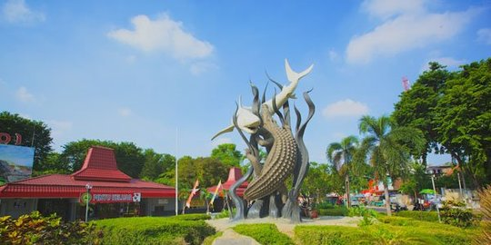
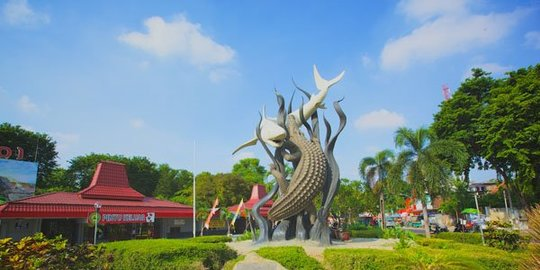
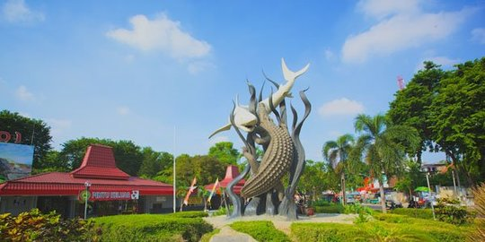

Galeri


 

Saya adalah seorang mahasiswa yang sedang belajar coding. Saya memiliki minat dalam pengembangan web dan ingin berbagi pengetahuan saya melalui website ini.

| Nama Kota | Icon Kota | Jumlah Penduduk | Keunikan |
|---|---|---|---|
| Bogor | Tugu Kujang | 1,097 jt | Sering Hujan | Jogja Andong 422.732 candi Surabaya Patung Suro dan Boyo 3.157.126 Kota Pahlawan jakarta monas 10,56 juta berkabut panas padang Jam Gadang 914.970 masakan banyak minyak bali patung Garuda Wisnu Kencana (GWK) 4,29 juta banyak bule
| Jogja | andong | 422.732 | Candi |
| Surabaya | Patung Suro dan boyo | 3.157.126 | Kota Pahlawan |
| Jakarta | Monas | 10,56 jt | berkabut Panas |
| Padang | Jam Gadang | 914.970 | masakan banyak minyak |
| Bali | Patung Garuda Wisnu Kencana | 4,29jt | Banyak Wisatawan Asing |